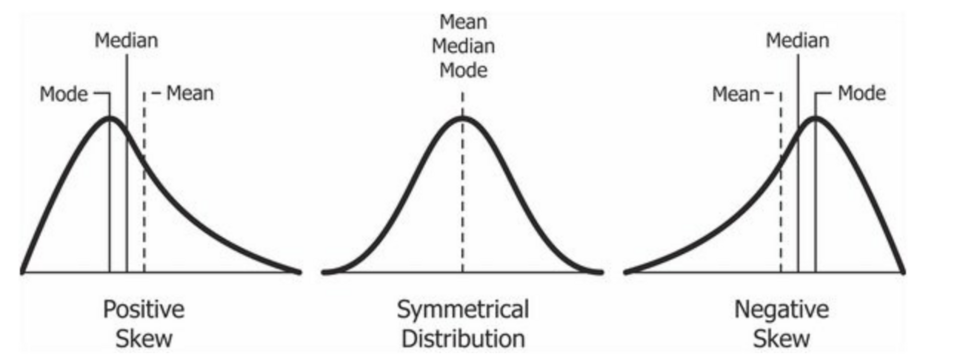

Imagine a psychologist surveys 1,000 students about their anxiety levels before a major exam. Staring at a spreadsheet containing 1,000 raw numbers is useless; the human brain cannot process that much chaotic information. To make the data meaningful, psychologists use math. Specifically, they use statistics to organize, summarize, and ultimately make predictions about human behavior based on the numbers they collect.
Once data is collected, the first step is to use Descriptive Statistics—statistical methods used to organize, summarize, and describe data in a meaningful way. This gives us a "snapshot" of what the sample looks like.
To summarize a massive dataset, we try to find a single number that represents the center or typical score. This is called a Measure of Central Tendency. There are three primary ways to calculate this:
We often like to see where a specific individual falls relative to everyone else using a Percentile Rank, which is the percentage of scores that fall below a specific score in a distribution. Example: If your SAT score is in the 90th percentile, it doesn't mean you got a 90% on the test; it means you scored higher than 90% of the people who took the test.
Most natural data falls into a symmetrical, bell-shaped Normal Curve, where the mean, median, and mode are all identical and sit right in the middle. But what happens if an extreme outlier gets into the data? The mean gets dragged toward the outlier, creating a "skew."

Normal and Skewed Distributions. In a perfect normal distribution, the data is symmetrical, meaning the mean, median, and mode all land at the exact center. In a positive skew, a few unusually high scores stretch the tail to the right, pulling the mean higher than the median. In a negative skew, a few unusually low scores drag the tail to the left, pulling the mean lower than the median.
Central tendency only tells half the story. To truly understand a dataset, we need Measures of Variation, which describe how much data values differ or spread out.
Imagine two students, Alex and Taylor, who both have an 85% average (mean). Alex scored an 84, 85, and 86 on their tests. Taylor scored a 70, 85, and 100. Their averages are identical, but their performance is radically different! To capture this, we use two tools:
Once a researcher has summarized their sample data, they want to answer the big question: "Can I generalize these findings to the entire population?" To do this, they shift from descriptive statistics to Inferential Statistics—mathematical methods used to make conclusions or predictions about a larger population based on data from a sample.
We can confidently generalize from a sample to a population only when three conditions are met:
When an experiment shows a difference between the control group and the experimental group, researchers must run a math test to ensure the difference didn't just happen by random luck. If the math proves the difference is reliable, it is said to have Statistical Significance (a statistical statement of how likely it is that an obtained result occurred by chance). In psychology, a result is usually considered statistically significant if the p-value is less than 0.05 (meaning there is less than a 5% probability the results were a fluke).
However, just because a result is mathematically "real" doesn't mean it is life-changing. To measure the practical importance, researchers look at Effect Size—a measure of how strong or meaningful a relationship or difference is. Example: Imagine a new study drug that is proven to raise your AP test score by exactly 0.01 points. Because it was tested on a million people, the result is statistically significant (it definitely works and wasn't a fluke). But the effect size is so incredibly small that the drug is practically useless in the real world!
According to the College Board's framework, Practice 3 focuses entirely on your ability to evaluate representations of psychological concepts in numbers, graphs, and charts.
Statistics are guaranteed to show up in the Article Analysis Question (AAQ) FRQ. Here is exactly how these mathematical concepts will be tested:
⚠️ Mean vs. Median in Skewed Data: The AP Exam loves to test this! If a dataset has an extreme outlier (creating a skew), the Mean becomes essentially useless because it gets dragged artificially high or low. In a skewed distribution, the Median is always the most accurate representation of the "typical" score.
⚠️ Descriptive vs. Inferential: Remember the timeline! You use Descriptive statistics *first* to summarize the data you currently have in front of you. You use Inferential statistics *second* to mathematically guess what the rest of the world looks like.
Ensure these mathematical concepts are locked in by practicing with our review tools: